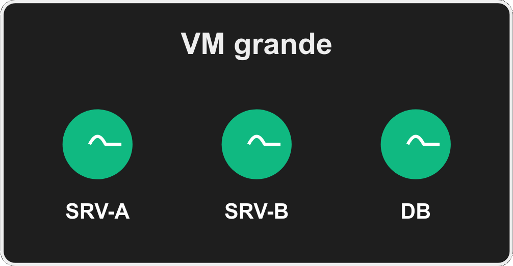
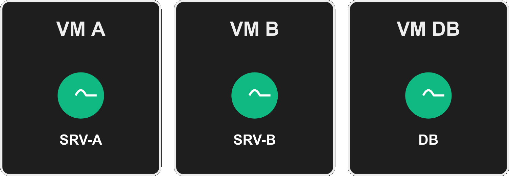
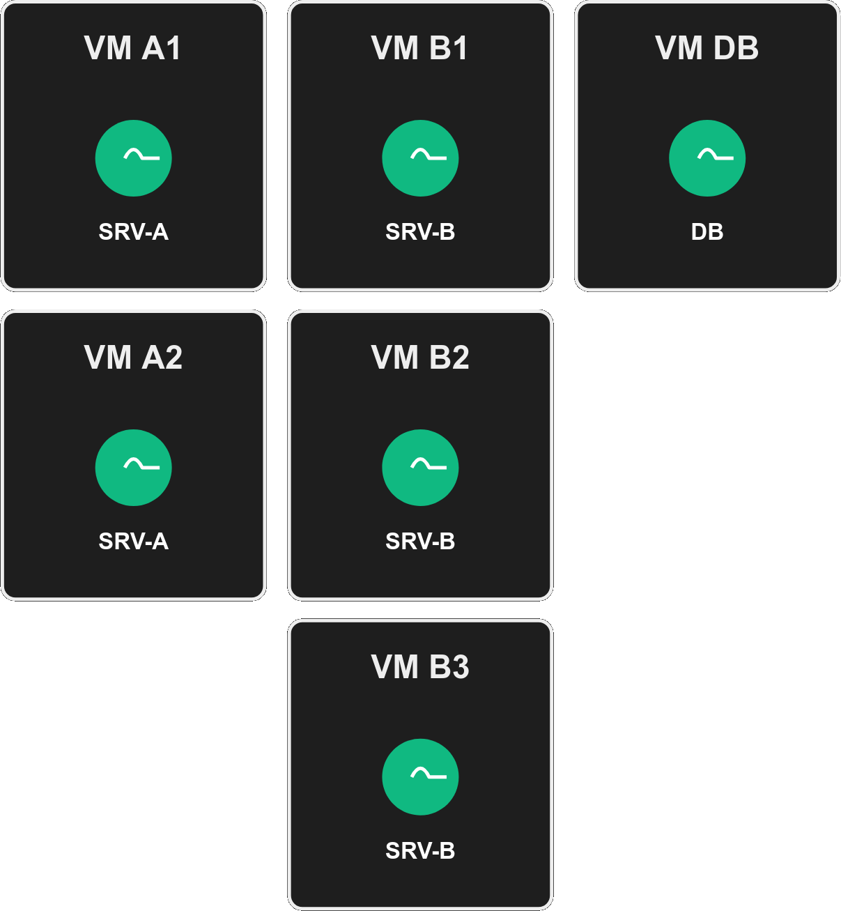
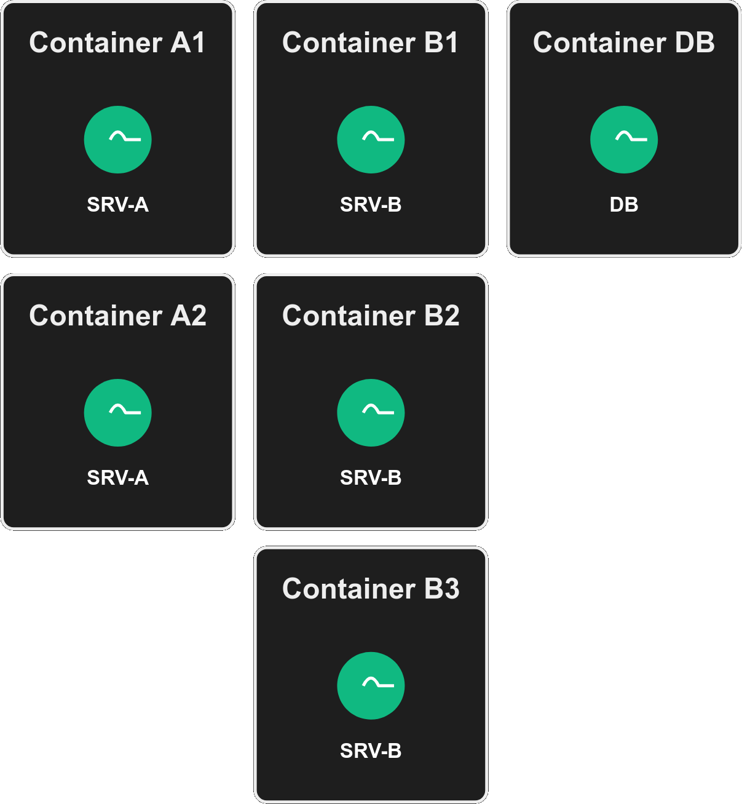
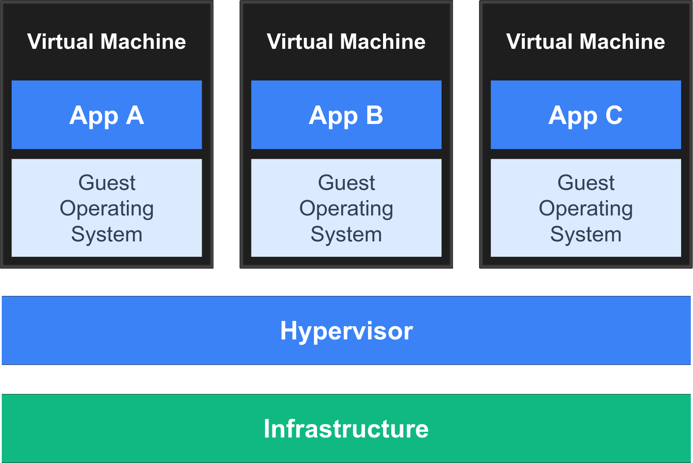
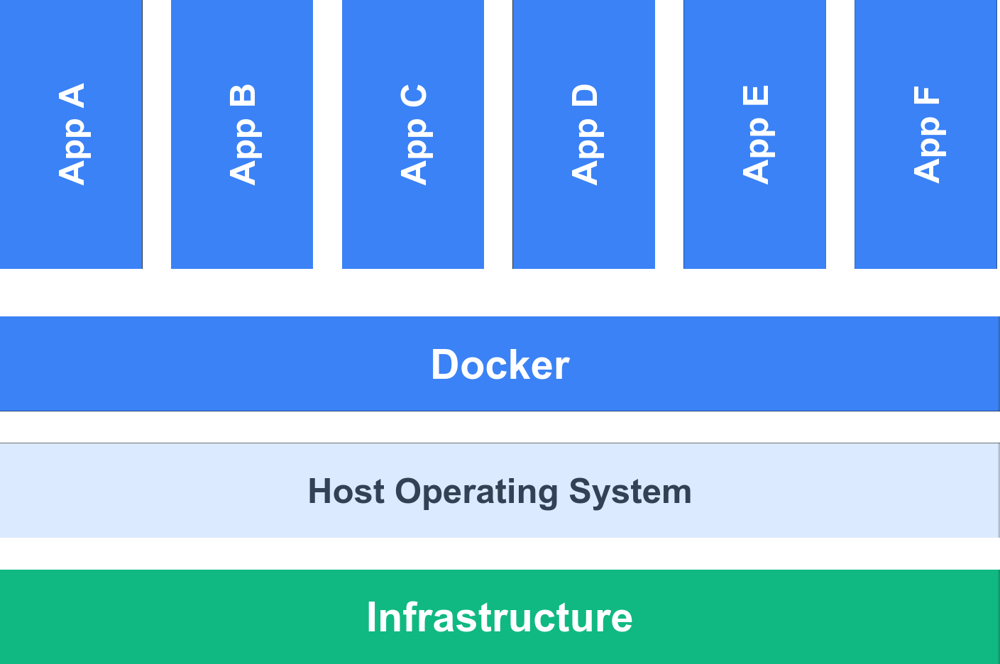
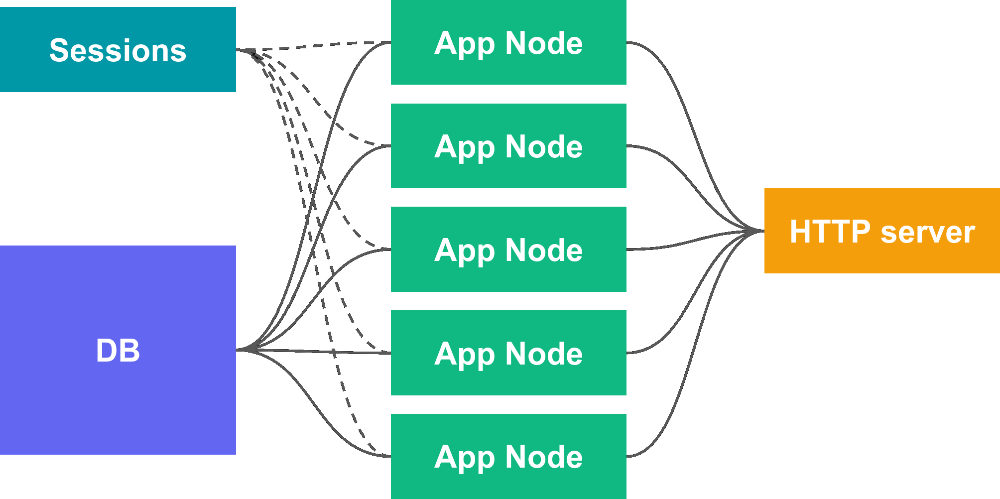

Escalabilidad y Virtualización
Tópicos Avanzados de Programación
Corriendo en prod
Cómo?
En esta clase:
Cómo correr una app aislada y escalable.
En la próxima clase:
Infraestructura moderna donde correr la app.
Qué es lo que necesitamos correr? (ej: para una app web)
- Una app web? Muchas?
- Una base de datos.
- Cola de tareas en background?
- Más cosas?...
Monolitos vs Microservicios
Qué es un monolito?
- Una sola app que hace todo.
- Un solo repositorio, un solo deploy, una DB.
- Seguramente separada en "módulos".
Qué son microservicios?
- Los módulos ahora son servicios separados.
- Repos, deploys y DBs independientes.
- Normalmente se comunican por APIs web.
Qué conviene?
No hay uno "mejor" que el otro! Depende mucho del contexto.
Microservicios:
✅ Independencia de equipos, deploys, roadmaps, escalabilidad, tolerancia a fallas.
❌ Overhead de trabajo, código, infra requerida, performance, complejidad, consistencia de datos.
Rinden cuando tenemos muchos equipos o servicios con requerimientos muy diferentes.
Monolito:
✅ Sin overhead, performance, simplicidad de deploy e integración.
❌ Difícil de escalar, módulos demasiado atados, dificultad si hay muchos equipos o módulos muy diferentes.
Más sentido en apps chicas/medianas.

Aunque la app sea un solo servicio, igual siempre corremos varios: app, DBs, web server, etc.
...dónde los corremos?
Opción 1:
Una máquina
Máquina física, o VM contratada en algún proveedor.

✅ Simple! pero...
Escalar: si se queda chica?
❌ Agrandar la máquina implica reiniciar todo!
❌ Techo: no puede crecer infinitamente.
❌ Una máquina grande suele ser más cara que varias chicas.
Eficiencia: si diferentes servicios requieren diferente HW?
(ej: app requiere muchos cores, DB requiere un core potente)
❌ Imposible escalar solo un servicio: pagamos por capacidad ociosa (ej: muchos cores potentes).
❌ Imposible escalar ⬆⬇ automáticamente: no podemos prender/apagar partes del HW de una máquina.
Isolation: qué tanto puede un servicio afectar a otro?
❌ Un mal servicio puede matar toda nuestra app.
❌ El manejo de dependencias puede ser un infierno.
Igualmente para muchas apps una máquina alcanza y sobra!
Opción 2:
Una máquina por servicio
Máquinas físicas, o VMs contratadas en algún proveedor.

Mejora bastante!:
✅ HW según el servicio: +escalabilidad, +eficiencia.
✅ Isolation: uso de recursos y dependencias por servicio.
Pero ojo:
❌ Seguimos teniendo un techo por servicio.
❌ Seguimos sin poder escalar ⬆⬇ automáticamente: siempre pagamos por el máximo que necesitamos aunque no lo usemos.
❌ Un upgrade sigue implicando downtime (de un servicio → app entera?).
❌ Overhead! N sistemas operativos corriendo: recursos, administración, red.
Pequeño desvío: disponibilidad
Imaginemos que nuestras VMs tienen 95% de uptime.
Qué uptime va a tener nuestra app en la opción 1?
95%
Qué uptime va a tener nuestra app en la opción 2? (asumamos 3 VMs)
95% * 95% * 95% = 85%! 3x downtime!!! 😱
Separar servicios en máquinas NO mejora uptime. Lo empeora!
Hay otra forma de usar muchas máquinas que sí mejora el uptime...
Opción 3:
N máquinas por servicio
Máquinas físicas, o VMs contratadas en algún proveedor.

Implica tener alguna especie de "molde" para cada servicio, que nos permita crear nuevas VMs de ese servicio fácilmente.
Mejora mucho más!:
✅ Ya no tenemos techo por servicio.
✅ Eficiencia! Podemos escalar automáticamente: prender/apagar máquinas según demanda, pagando menos.
✅ Y escalar sin downtime.
✅ Mejora el uptime! Si una VM está caída, otra puede responder (ej: 3 VMs del mismo servicio con 95% de uptime = 99.9%).
Pero ojo:
❌ El overhead sigue presente, incluso peor.
Aparecen dos nuevas necesidades:
- Balanceo de carga: cómo repartir las requests/queries/etc entre N nodos.
- Orquestación: cómo encargarse de que los nodos estén corriendo.
(por ahora, nodo=máquina)

Balanceo de carga
Balanceador: servicio que recibe, encola y reparte las peticiones/queries/etc entre varios nodos.
- Resiliencia: si se cae un nodo, el sistema sigue andando.
- Eficiente: carga repartida entre los nodos.
Hay muchas herramientas para hacerlo, depende del servicio:
Servidores web como NGINX balancean requests, las DBs tienen sus propios balanceadores, etc.
Orquestación / Auto Scaling
Orquestador: servicio que se encarga de mantener los servicios de nuestra app corriendo.
- Le describimos nuestra app: qué servicios, cuántos nodos, dependencias entre ellos, etc.
- Con esa info, levanta los nodos y se encarga de mantenerlos vivos.
- Tiene que tener control sobre la infra: poder monitorear/prender/apagar nodos.
Y puede hacer auto scaling!: prender/apagar nodos según demanda.
- Le configuramos reglas: min/max de nodos, qué tan rápido subir/bajar, etc.
- Tiene que poder medir la demanda o carga.
- Tiene que informar al balanceador cuando prende/apaga nodos.
El orquestador y el balanceador pueden ser el mismo servicio, o separados.
Y ambos son puntos críticos de falla, que requieren redundancia.
Hay todavía un problema importante por resolver:
El overhead de tener N máquinas.
Opción 4:
N contenedores por servicio
Contenedores: "casi VMs" pero mucho más escalables y prácticos.

No es lo mismo que N VMs por servicio?
Sí y no, más no que sí. Tenemos que entender contenedores.
Qué es un Contenedor?
Un contenedor es un proceso aislado, con su propio filesystem, red, etc.
Se puede correr en cualquier Linux(*) que tenga el runtime de contenedores (ej: Docker).
Se crea a partir de una Imagen.
(*) Windows y MacOS corren contenedores dentro de una VM Linux.
Qué es una Imagen?
Es un "molde" que se usa para crear contenedores: tiene todos los archivos y configs necesarias para ello.
Se construye compilando un Dockerfile: archivo de instrucciones de cómo construir una imagen.
Ej: quiero correr mi app web en un contenedor. Qué hago?
1: Escribo un Dockerfile
Contiene las instrucciones de cómo construir la imagen con todo lo que mi app necesita dentro: dependencias, archivos de código, etc.
2: Compilamos el Dockerfile creando la Imagen
Le pedimos a Docker que compile ese Dockerfile, y como resultado obtenemos una Imagen lista para usar.
3: Creamos Contenedores con la Imagen
Teniendo la Imagen podemos crear todos los Contenedores nuevos que queramos, usándola como molde.
Cada contenedor es como una "mini VM" corriendo e independiente (sus archivos, red, etc).
VMs vs Contenedores
Pueden sonar parecidos: ambos sirven para correr algo de forma aislada.
Pero en la práctica son muy diferentes.


Primera diferencia grande: performance.
- Los contenedores son mucho más livianos: no tienen un sistema operativo dentro!
- En el mismo HW que corríamos un puñado de VMs, ahora podemos correr cientos de contenedores.
- Podemos levantar contenedores en instantes, muchísimo más rápido que encender VMs.
Segunda diferencia grande: moldes livianos.
- Fáciles de distribuir! Las imágenes no pesan nada: solo lo que la app requiere, no todo un OS (ej: mandar la imagen a prod, o compartirla públicamente, etc).
- Compilar la imagen es super rápido: no hace falta instalar todo un OS.
Tercera diferencia grande: fácil reutilización.
- Un Dockerfile puede decir "partí de tal Imagen conocida". Reaprovechamos cosas hechas!
- Hay muuuuchas imágenes públicas con todo tipo de cosas que podemos necesitar (DBs, frameworks, etc).
- Las recetas (Dockerfiles) ahora son ejecutables y estandarizadas, muchas en internet!
Diferencia importante en el uso: mascotas vs ganado.
- La idea no es tener máquinas long lived, sino contenedores efímeros: creamos y matamos on demand, solo importa la cantidad.
- Los contenedores entonces no tienen que guardar los datos!! (ej: DB)
- Dónde guardamos? Fuera de los contenedores, en disco que pueden acceder ("volúmenes").
Esas diferencias también impactan en los orquestadores!
- En el mundo de containers, casi siempre se usa algún orquestador.
- Son mucho más potentes y mucho más eficientes.
Ej: Kubernetes, Docker Swarm, Nomad, Docker Compose, etc.
Demo
Docker y orquestador.
Opción 4:
N contenedores por servicio
Resumiendo!
Es el estándar y (casi siempre) la mejor forma de trabajar:
✅ Escalable, eficiente, aislado, portable, reproducible, rápido, fácil de distribuir y compartir.
✅ Permite balanceo de carga y auto scaling.
✅ Permite usar orquestadores modernos (ej: Kubernetes) que hacen todo esto automáticamente.
Pero ojo:
❌ No es trivial de usar, requiere aprender a usar contenedores y orquestadores.
❌ Requiere cambiar la forma de pensar y trabajar: contenedores efímeros, no guardar datos en ellos, etc.
Puede ser un overkill para apps muy simples o pequeñas.
Escalando cada capa
Una app web suele tener 2 capas que escalan muy diferente:
La aplicación en sí misma.

La base de datos.Escalando la DB
La parte difícil...
La DB está lenta, qué hacemos?
Antes de escalar nada, las cosas básicas: índices y caché. No tiene sentido escalar una DB subóptima, o escalar queries que podríamos evitar.
Si eso ya está bien hecho, entonces sí...
El nodo (VM, container, máquina física) de la DB se quedó chico (las queries demoran mucho), qué hacemos?
- Escalar horizontalmente? (agregar más nodos).
- Escalar verticalmente? (agrandar el nodo).
Hasta ahora escalar horizontalmente parecía mejor y más barato... Pero con la DB hay un problema: dónde va la data cuando hay varias DBs?
- DBs iguales? (réplica) → sincronización!
- DBs diferentes? (particionar) → complejidad de queries!
❌ Ambas opciones son difíciles de hacer bien y traen bastantes sub problemas a resolver.
✅ Si podemos, a la DB preferimos escalarla verticalmente (un nodo más grande).
Excepción: solo muchas lecturas? Réplicas de solo lectura! (no tan difícil como réplicas con escritura)
Además, si vamos por una opción con múltiples nodos... cómo balanceamos la carga?
Depende mucho de la DB, suelen tener su propio sistema para ello.
Ok, vamos por agrandar el nodo.
...pero qué es "grande"? Qué componente de HW nos importa más?
Al escalar la DB, RAM suele ser lo más importante!
La RAM es cientos de veces más rápida que el disco.
Idealmente: correr queries sin leer disco, con datos en RAM.
+RAM → -lecturas de disco → queries +rápidas.
Si no hay forma de que la RAM alcance, entonces sí, el disco pasa a importar (usar NVMe, etc).
Cuando la RAM alcanza, el segundo más importante es el CPU.
Queries complejas requieren mucho CPU.
Cores +rápidos → queries +rápidas.
+Cores → +queries en simultáneo.
Y cuando eso no es suficiente...
Desnormalizar datos puede reducir mucho el costo de queries.
Pero solo caer en esto si no tenemos otra opción! La desnormalización trae sus propios problemas...
Escalando la aplicación
La parte fácil.
El nodo que corre nuestra app se está quedando chico (muy lento en responder), qué hacemos?
(y no es problema de mal código)
- Escalar horizontalmente? (agregar más nodos).
- Escalar verticalmente? (agrandar el nodo).
Era más eficiente y barato tener muchos nodos. En esta capa hay algo que lo impida?
Dónde se guardan las sesiones?
Sesiones en RAM?
❌ Se rompe!
❌ Si las requests le pueden caer a cualquier nodo, cómo hacemos que todos los nodos tengan la data actualizada de una sesión? (sincronizar RAM sería una locura)
Sesiones en la DB?
❌ Funciona, pero muy rápido sobrecarga la DB!
❌ Cada nodo que recibe una request va a tener que pegarle a la DB para traerse la sesión.
Solución ideal 1: servidor de sesiones.
✅ Un Redis, Memcached o similar, que mantenga las sesiones en RAM.
✅ Son super rápidos, no le pegamos a la DB, y no dependemos de a qué nodo le cae la request.
Solución ideal 2: en las cookies mismas.
✅ En lugar de que la cookie solo guarde un ID, guardamos todo lo que necesitamos en la cookie.
✅ Tiene que estar firmada!!
❌ Hay límites de cuánto pueden guardar (4k) y siempre viajan (+red).
✅ Si usamos alguna de esas dos opciones y los nodos de la app no guardan datos dentro (contenedores efímeros!), entonces es muy fácil escalar horizontalmente.
Simplemente agregamos más nodos y el load balancer se encarga del resto!
La arquitectura suele quedar así:

Escalando más cosas
Scale all the things!
El servidor HTTP? (NGINX, etc).
Lo que está entre los nodos que corren nuestra app y el mundo (balancea carga, encripta, etc).
✅ Los modernos (NGINX) aguantan muchísimo tráfico, muy raro tener que escalarlos.
✅ Le podemos sacar carga derivando nuestro contenido estático a una CDN.
Si aún así no alcanza... felicitaciones, son millonarios :)
Tareas programadas o en background?
✅ Hay sistemas de encolado y ejecución de tareas ("jobs") o incluso workflows, que se encargan de escalar los workers automáticamente.
✅ Suele no hacer falta un balanceador, sino que al revés: cada worker "pide" más trabajo cuando está libre.